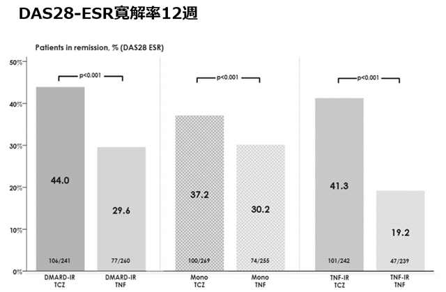
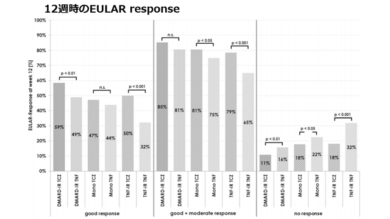

DMARDs-IR/Mono/TNF-IR いずれの群においても12週間の評価でアクテムラはTNF-iに比して高い効果を示した
DMARDs効果不十分及びTNF阻害薬効果不十分例に対するアクテムラとTNF阻害薬の有効性の比較
ドイツ実臨床における1603人のレトロ解析による検討

治療後12週間という早期評価でも、全ての群でACT投与はDAS28ESR-寛解率が高かった

Good/good+moderate respose は全ての群でACT群が高く、無効例が少なかった。